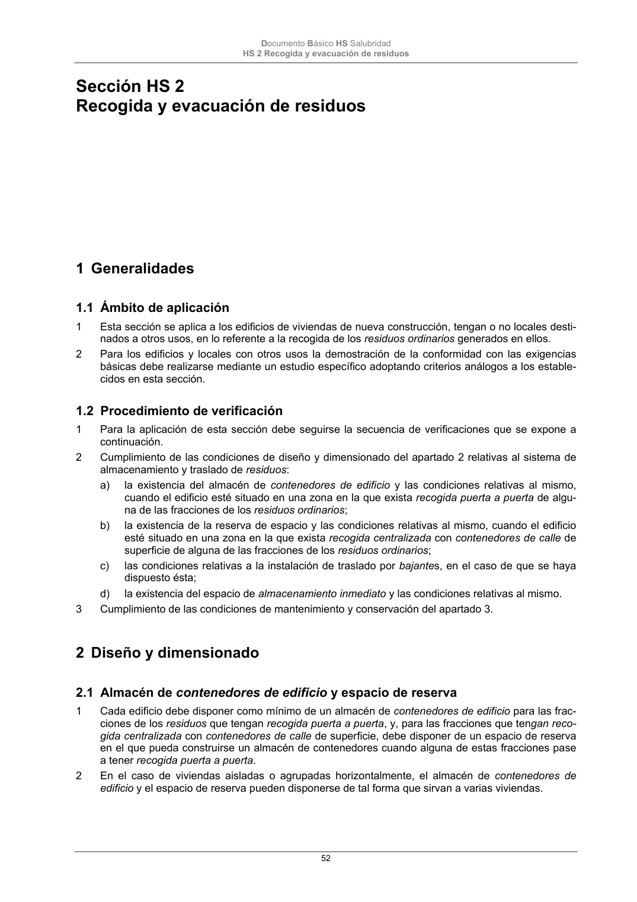

DB-HS Salubridad · edición 2022-06-14 · capa oficial
Documento DB-HS-oficial · SHA-256 del PDF 68df3caacc95f71aee2ec1ba7b2c65ae66155c21e3a8785521b8fdd4fd640d3b
Página física 52 de 184.
Copia fiel del PDF fuente · Fuente oficial
Ficha de la disposición en la fuente oficial
Formato: Texto de la página (Markdown)
Documento Básico HS Salubridad HS 2 Recogida y evacuación de residuos 52 Sección HS 2 Recogida y evacuación de residuos 1 Generalidades 1.1 Ámbito de aplicación 1 Esta sección se aplica a los edificios de viviendas de nueva construcción, tengan o no locales desti- nados a otros usos, en lo referente a la recogida de los residuos ordinarios generados en ellos. 2 Para los edificios y locales con otros usos la demostración de la conformidad con las exigencias básicas debe realizarse mediante un estudio específico adoptando criterios análogos a los estable- cidos en esta sección. 1.2 Procedimiento de verificación 1 Para la aplicación de esta sección debe seguirse la secuencia de verificaciones que se expone a continuación. 2 Cumplimiento de las condiciones de diseño y dimensionado del apartado 2 relativas al sistema de almacenamiento y traslado de residuos: a) la existencia del almacén de contenedores de edificio y las condiciones relativas al mismo, cuando el edificio esté situado en una zona en la que exista recogida puerta a puerta de algu- na de las fracciones de los residuos ordinarios; b) la existencia de la reserva de espacio y las condiciones relativas al mismo, cuando el edificio esté situado en una zona en la que exista recogida centralizada con contenedores de calle de superficie de alguna de las fracciones de los residuos ordinarios; c) las condiciones relativas a la instalación de traslado por bajantes, en el caso de que se haya dispuesto ésta; d) la existencia del espacio de almacenamiento inmediato y las condiciones relativas al mismo. 3 Cumplimiento de las condiciones de mantenimiento y conservación del apartado 3. 2 Diseño y dimensionado 2.1 Almacén de contenedores de edificio y espacio de reserva 1 Cada edificio debe disponer como mínimo de un almacén de contenedores de edificio para las frac- ciones de los residuos que tengan recogida puerta a puerta, y, para las fracciones que tengan reco- gida centralizada con contenedores de calle de superficie, debe disponer de un espacio de reserva en el que pueda construirse un almacén de contenedores cuando alguna de estas fracciones pase a tener recogida puerta a puerta. 2 En el caso de viviendas aisladas o agrupadas horizontalmente, el almacén de contenedores de edificio y el espacio de reserva pueden disponerse de tal forma que sirvan a varias viviendas.
